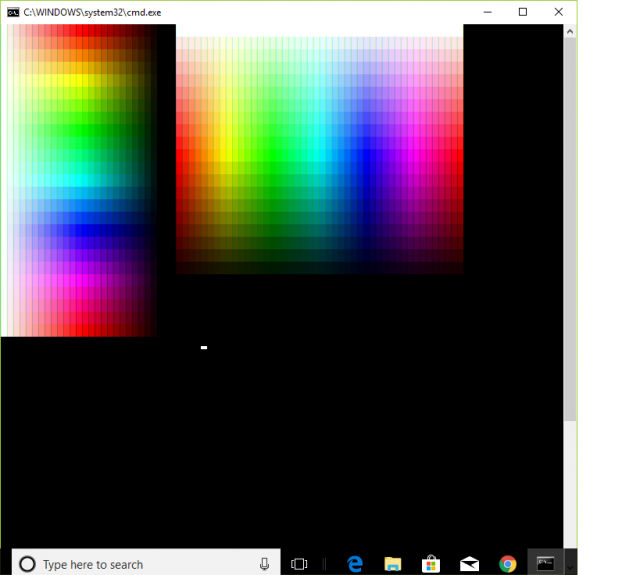
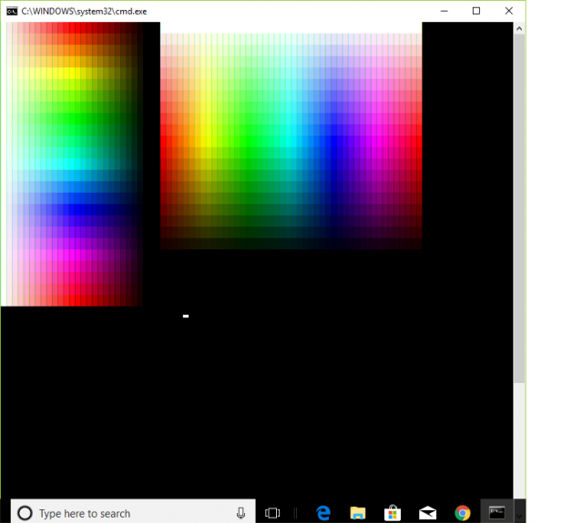

How does this colour Batch script work?
Posted: 27 May 2018 11:54
Sorry for the broad question. I was browsing Dostips when I came across this code in viewtopic.php?f=3&t=6839&p=56613&hilit=batch+rgb#p56613
And it produces :

I looked and pondered over the code, but I can't wrap my head around how it works. I read more and it seems like something to do with Vt100 escape sequences, but after a good Google I still don't get how that script works. Can anyone please explain how the code gets all those colours? Thanks a lot
Code: Select all
@echo off & setlocal enabledelayedexpansion
mode 90,60
for /F %%a in ('echo prompt $E^| cmd') do set "ESC=%%a"
Set /a s=10000, v1=10000
For /L %%h in (0,15,360) do (
For /L %%v in (10000,-400,0) do call :plot_HSL_RGB %%h !s! %%v
if !v1! geq 0 ( <nul set /p "=%esc%[38;2;0;0;0mÛ"
<nul set /p "=%esc%[38;2;0;0;0mÛ"
For /L %%l in (0,8,360) do call :plot_HSL_RGB %%l !s! !v1!
set /a v1=v1-500
)
echo(
)
pause
exit /b
:Plot_HSL_RGB H S L
rem H=0..360 S=0..10000 L=0..10000
set /a H=%1, S=%2, L=%3
rem When 0 <= H < 360, 0 <= S <= 1 and 0 <= L <= 1:
if !H! equ 360 set /a H=0
if !H! lss 0 echo ERROR! & goto :EOF
set /a va=2*L-10000
if !va! lss 0 set /a va=-va
set /a C=(10000-va)*S/10000
set /a "h1=h*10000/60, mm = (h1 %% 20000) - 10000"
if !mm! lss 0 set /a mm=-mm
set /a X = C *(10000 - mm)/10000 , m = L - C/2
rem (R,G,B) = (R'+m, G'+m, B'+m)
if !H! lss 60 (set /a R=C+m, G=X+m, B=0+m) else (
if !H! lss 120 (set /a R=X+m, G=C+m, B=0+m) else (
if !H! lss 180 (set /a R=0+m, G=C+m, B=X+m) else (
if !H! lss 240 (set /a R=0+m, G=X+m, B=C+m) else (
if !H! lss 300 (set /a R=X+m, G=0+m, B=C+m) else (
if !H! lss 360 (set /a R=C+m, G=0+m, B=X+m) else (echo ERROR!)
)
)
)
)
)
set /a R=R*255/10000, G=G*255/10000, B=B*255/10000
<nul set /p "=%esc%[38;2;!R!;!G!;!B!mÛ"
goto :eof
I looked and pondered over the code, but I can't wrap my head around how it works. I read more and it seems like something to do with Vt100 escape sequences, but after a good Google I still don't get how that script works. Can anyone please explain how the code gets all those colours? Thanks a lot